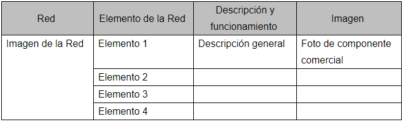

Portafolio de Actividades
Redes digitales
Departamento de Ciencias e Ingenierías | Universidad Iberoamericana Puebla, México.
Práctica 3. Desarrollo de una aplicación de Red Local .
- Resumen -
La práctica consiste en utilizar el software creado por Cisco. Donde podemos crear una red local.
- Objetivo General -
Aplicar los elementos que se utilizan para configurar una red local y el acceso a recursos de un equipo en red. .
- Objetivos especificos -
- Utilizando el programa de Packet Tracer de Cisco, simula una red de aplicación, asignando a las computadoras las IP pertenecientes a la red 192.168.7.0., utilizando la ventana de comandos utiliza la función ping para verificar la comunicación entre cada una de las computadoras. En una escuela se necesitan desarrollar una red de computadoras, se cuenta con 5 salas de cómputo con 10 computadoras cada uno, y una sala de administración con 6 computadoras para el personal administrativo. Los salones de cómputo se encuentran a más 80 metros de la oficina administrativa. La oficina administrativa posee un router para la conexión a internet de todos los equipos de la escuela.
- Elabora un video donde se compruebe el funcionamiento de 5 dispositivos comunicados entre sí.
- Elabora un diagrama o mapa representativo de los salones con sus computadoras, así como su ubicación física.
- Elabora una tabla comparativa con la distribución física e IP de cada equipo (computadora, repetidor, switch y router).

- Resultados -
- ¿Cuántos metros de cable de red se utilizarán?
- Sin tomar en cuenta el costo de las computadoras, ¿Cuál es el costo de la infraestructura de red (cotiza el metro de cable y los equipos a utilizar)?
Aproximandamente se ocuparan 20m de cable de red
El costo de cable es de $200 por metro, de un router $1500, de un repetidor $500, de un switch $1000, daría un total de $14500